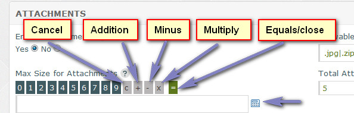

Documentation -


Documentation -

COMMERCIAL VERSION INCLUDES: - FREE upgrades for life - One time payment, NO subscriptions - ALL features unlocked and unlimited
Overview
General settings are available to manage certain features.
Help Desk Name
The name of your website or ticket system. Max 150 chars.
E-Mail 'From' Address
E-mail 'From' address that appears when any e-mails are sent. This may need to be a valid e-mail on some servers.
HTTP Installation Path
Full HTTP path to your ticket installation. NO slash at the end.
Example:
http://www.yoursite.com/tickets
Software Language
Select software language. For more information on language packs and language in general, click here.
PHP Date/Time Format
Preferred PHP date/time format. If you are unsure of this leave it as it is. For more information and to see which symbols can be used view the PHP website.
Timezone
Default timezone. Edit timezones in 'control/timezones.php' if required.
Utilises the PHP5 datetime class, which has better
support for timezones, including daylight saving. Legacy support is included for PHP4, but daylight saving will not function automatically.
Auto Close Tickets
Do you want the system to auto close tickets/disputes that are awaiting a visitor reply, but haven`t been replied to for X amount of days? Set to 0 to disable or enter amount in days. Example: 50
Note: If a ticket is opened again on the same day it is closed, it will remain open for the duration of that day and if no further replies are added, will again auto close the following day.
Check notification box to send email notification to visitor. If a dispute is open, notification is sent to everyone in the dispute.
IMPORTANT: For this feature to run, you need to set up a cron job to auto parse the 'close-tickets.php' file in your installation. More info here.
Enable BB Code
Do you wish to enable BBCode? BBCode or Bulletin Board Code is a lightweight markup language used to format data. The available tags are usually indicated by square brackets ([]) surrounding a keyword, and are parsed before being translated into a markup language that web browsers understand. Examples:
[b]Bold Text[b] = Bold Text
[link=http://www.google.co.uk]Google[/link] = Google
BBCode was devised to provide a safer, easier and more limited way of allowing users to format their messages.
Text ©Wikipedia
Note that BBCode is not parsed in email templates.
Portal Tickets Per Page
How many tickets to show per page for visitors in their ticket portal? Must be at least 1. High amounts may cause pages to load slower.
XML-RPC API Key
If you are utilising the XML-RPC data post API option to create tickets from other applications, enter API key. This is to ensure data coming in is valid. Key should be numbers, letters & hyphens ONLY and a max of 100 characters.
Use the auto create option if preferred by clicking 'Generate Key'.
Start Day for Week
Specify your preferred start day for the week. This is for the javascript pop up calendar. For example, UK is Sunday.
Javascript Calendar Date Format
When date input form fields are clicked, a javascript calendar appears. When a date is clicked on the calendar, this transfers to the input box. Specify preferred date format.
Admin Folder Name
For security you should rename your admin folder. If you rename it, specify the new name here so the correct path appears in emails. Folder name should NOT contain invalid characters. Alphanumeric, hyphens and underscores are recommended.
Help Desk Status
Enable or disable help desk system.
Auto Enable on Date
If the system is disabled, do you wish to auto enable it on any given date?
reCaptcha Private & Public Key
reCaptcha is a free service from Google to prevent bots from auto submitting forms. Click "Create Keys" to create a free account. After you have signed up for your free account, enter your private key and public key in the relevant boxes.
To disable spam prevention measures in this software, leave both boxes blank. More info about reCaptcha here.
reCaptcha - Disable if User is Logged In
Do you wish to disable the captcha if the user is logged into their ticket portal? Its unlikely bots would attack a form behind a password protected area, so this can be disabled if you wish.
Enable Attachments
Do you want to enable attachments so visitors can include files with their tickets? Note that disabling this feature does not disable attachments for admin responses.
Allowable File Extensions
If enabled, specify allowed file extensions. This must be the extension (including period or dot) separated with a pipe. Enter as many as you need. Extensions are NOT case sensitive.
Examples:
.jpg|.zip|.rar
.Jpg|.ZIP|.RaR
Leave blank for no restrictions (NOT recommended).
Max Size for Attachments
Maximum file size for attachments. In Bytes.
Examples:
1024*1024 = 1048576 = 1MB (You enter 1048576)
1024*200 = 204800 = 200KB (You enter 204800)
Set to 0 for no limit or use the calculator for help by clicking (See Below)

Total Attachment Boxes
Total attachment boxes to display on ticket page. For example, if you entered 5, visitor could include a maximum of 5 attachments per ticket. Restricted to 1 box in the free version.
Server Path to Attachments Folder
Full server path to your attachments directory. This should be auto calculated on install. NO slash at the end. If you are unsure of your server path, contact your host.
Examples:
/home/server/public_html/tickets/templates/attachments (Linux)
C:\windows\path\tickets\templates\attachments (Windows)
Rename Attachments
Do you wish to rename attachments on upload? Can resolve issues where invalid characters are used in file names.
Enable F.A.Q
Do you wish to enable the frequently asked questions?
Total Popular Questions
The F.A.Q main page shows the most popular questions. This is determined by most votes, not visits. How many popular questions do you want to show?
Enable Voting System
Do you wish to enable the voting system? This is useful for admin to see which questions have proved useful and which haven`t. Enable or disable depending on your preference.
Cookie Duration (in Days)
If multiple votes aren`t allowed, a cookie is set. Specify the duration IN DAYS before this cookie expires.
Enable Multiple Votes
The voting system enables a webmaster to see if questions have been helpul or not. Do you want visitors to be able to vote multiple times? This is fairly pointless, but can be enabled if required.
Questions Per Page
How many questions do you wish to display per page for a F.A.Q category?
Enable SMTP
Do you wish to enable SMTP to send e-mails? Some servers restrict the PHP function sending to addresses outside of the domain, so this is required. Generally SMTP should be enabled for better performance.
Some servers require authentication via username/password.
SMTP Host
Enter SMTP host. This can be your server IP, localhost or mail server address.
Examples:
localhost
mail.yoursite.com
smtp.yoursite.com
127.0.0.1
SMTP Username
Enter SMTP username if required. This is usually your e-mail address.
SMTP Password
Enter SMTP mail password if required.
SMTP Port
Enter SMTP port number. Usually 25 or 26. Can also be your submission port, ie: 587. If you are unsure, contact your host.
Admin Footer/Public Footer
These options only appear if you have purchased a commercial licence. Enter your own footer data. This will replace the default footer info. HTML may be used here if required.
Help Tips
The same or additional information may be provided by hovering your cursor over the  image next to each heading in the admin area if applicable.
image next to each heading in the admin area if applicable.